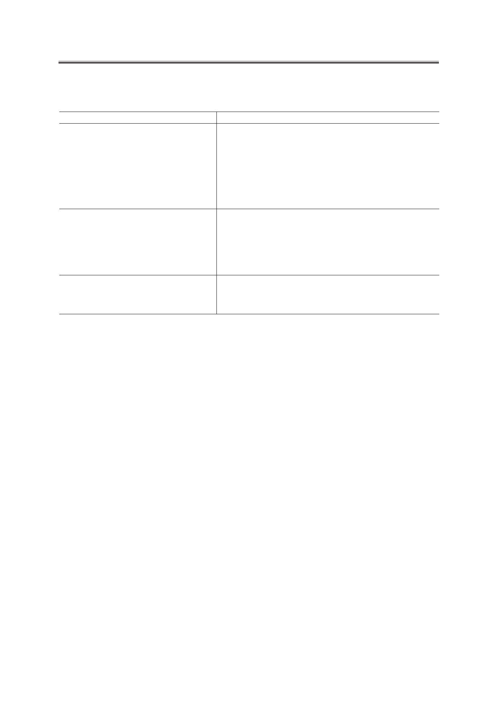

Н.Б. Голованова, А.В. Сороко
Таблица 1. Функции личных кабинетов в информационной системе
статистики образования
Пользователь личного кабинета
Функции личного кабинета
Личный кабинет образовательной организации
• доведение до образовательной организации официальной инфор-
мации Министерства образования и науки РФ;
• санкционированный доступ для заполнения сведений в режиме
«on-line»;
• предоставление доступа к программному обеспечению, необходи-
мому для предоставления статистических отчетов;
• возможность загрузки статистических отчетов;
• просмотр предоставленных статистических отчетов;
• просмотр статусов предоставленных статистических отчетов.
Личный кабинет органа управления
образованием субъекта Российской Федерации
• доведение до органа управления образованием субъекта Российской
Федерации официальной информации Министерства образования
и науки Российской Федерации;
• санкционированный доступ для заполнения сведений в режиме
«on-line»;
• контроль над ходом сбора сведений по статистическим отчетам от
образовательных организаций субъекта.
Личный кабинет федерального органа
исполнительной власти
• доведение до федерального органа исполнительной власти офици-
альной информации Министерства образования и науки РФ;
• санкционированный доступ для заполнения сведений в режиме
«on-line».
Объект каждого уровня иерархии имеет паспорт, содержащий ключевые признаки
объекта. Наибольшее количество атрибутов имеет паспорт образовательной организации,
который включает 26 атрибутов: код образовательной организации; ОКПО; ИНН; КПП;
полное и краткое наименование организации; адрес и телефоны; электронный адрес;
фамилия, имя, отчество руководителя организации; номер лицензии на право ведения
образовательной деятельности; реквизиты свидетельства государственной аккредита-
ции образовательных программ и ряд других. Например, по уровню общего образова-
ния в связи с большим количеством образовательных организаций и в целях сохранения
достоверности информации на должном уровне паспорт каждой организации отдан в
управление учредителю образовательной организации. В частности, паспорта школ ре-
гионального подчинения и паспорта органов управления образованием муниципального
уровня, а также паспорта негосударственных организаций создаются и поддерживаются
в актуальном состоянии органом управления образованием соответствующего субъек-
та РФ; паспорта образовательных организаций муниципального уровня создают и ведут
органы управления образованием муниципального уровня. Паспорта образовательных
организаций федерального подчинения заполняются централизованно на федеральном
уровне. В функции вышестоящих организаций входит также прием (утверждение) от-
четов от образовательных организаций. В личных кабинетах образовательных органи-
заций доступна только возможность работы с формами ФСН: получение программного
обеспечения для заполнения форм ФСН, загрузка заполненных отчетов по формам ФСН,
хранение отчетов по закрытым сборам.
Среди личных кабинетов информационной системы статистики образования роль
первичных играют личные кабинеты образовательных организаций. Именно в личный
кабинет данного типа производится загрузка отчетов по формам ФСН, содержащим
показатели, характеризующие различные аспекты деятельности образовательных ор-
Российский технологический журнал 2017 Том 5 № 5
9